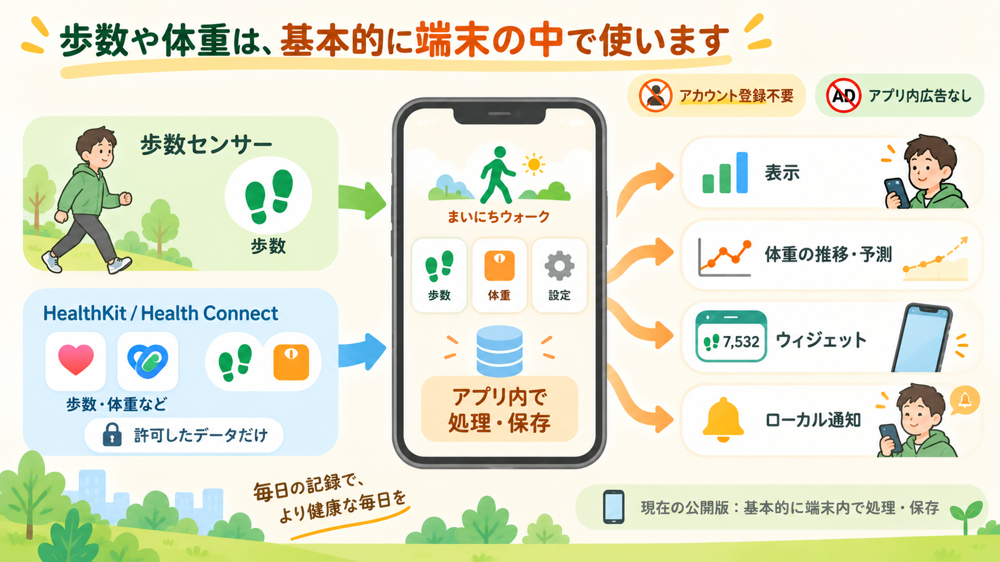

歩数や体重のデータはどう扱われる？ まいにちウォークのシンプルな設計
公開日: 2026年9月23日
歩数や体重を記録するアプリを使うとき、 「このデータはどこに保存されるんだろう？」 「アカウント登録は必要？」 「広告のために使われたりしない？」 と気になることがあります。
まいにちウォークは、毎日使うアプリだからこそ、できるだけシンプルな仕組みにしています。
2026年9月現在の公開iPhone版では、歩数や体重などのデータは基本的に端末内で処理・保存し、アカウント登録なしで使えます。

先に要点
- 歩数・体重などのデータは、現在の公開版では基本的に端末内で処理・保存します。
- アカウント登録は不要で、アプリ内広告もありません。
- HealthKitなどの健康データは、利用者が許可した範囲だけ、歩数や体重の表示・計算のために使います。
歩数や体重は、まず端末の中で使う
まいにちウォークでは、歩数や体重を表示したり、記録を振り返ったり、体重の傾向や予測を計算したりします。 現在の公開iPhone版では、そのための処理を基本的に端末内で行います。
たとえば、今日や過去の歩数、体重の記録、目標歩数、表示テーマなどの設定、 体重の推移や予測に使う計算といった情報を、アプリの機能のために使います。
歩数や体重を使うために、まいにちウォーク専用のクラウドアカウントへアップロードする仕組みではありません。
アカウント登録は必要？
必要ありません。 メールアドレスやパスワードを登録したり、ログインしたりしなくても使い始められます。
アプリをインストールしたら、そのまま歩数計として使えます。体重の記録も任意です。 「まず歩数だけ使いたい」という場合に、個人情報を入力してアカウントを作る必要はありません。
HealthKitは何のために使う？
iPhoneでは、AppleのHealthKitを使って歩数や体重などの健康データを扱うことがあります。 ただし、アプリが自由にすべてのデータを読めるわけではありません。
利用者が許可した項目だけを、まいにちウォークの機能に必要な範囲で読み取ります。 たとえば、歩数を表示するために歩数を読み、体重の記録や推移を見るために体重データを使います。
また、高速モードでは、iPhone本体の歩数センサーから今日の歩数を直接読み取ります。 歩数の取得方法については、 「歩数がすぐ更新されないことがあるのはなぜ？」 で詳しく説明しています。
体重を記録すると、どこに保存される？
アプリで入力した体重は、まず端末内に保存されます。 設定を有効にしている場合は、アプリで記録した体重をHealthKitにも書き込めます。
ここで大切なのは、アプリ内の記録とHealthKitのデータは、同じものではないという点です。
アプリを削除すると、アプリ自身が保存していた設定や体重記録は端末から削除されます。 一方、HealthKitへ保存されたデータはAppleのヘルスケア側で管理されるため、 アプリを削除しただけでは自動的には消えません。
ウィジェットや通知はどうなっている？
ホーム画面のウィジェットに歩数を表示するため、アプリとウィジェットの間で必要な情報を共有します。 この共有も同じ端末内で行います。
また、目標達成のお知らせやリマインドは、iPhoneのローカル通知を使っています。 通知を出すために、歩数や体重を外部サーバーへ送る必要はありません。
広告はある？
現在の公開版には、アプリ内広告を入れていません。
また、HealthKitや歩数センサーから取得した歩数・体重などのデータを、 広告配信やマーケティングのために利用していません。 歩数や体重は、まいにちウォークの機能を提供するために使います。
Android版も同じ考え方で開発中
まいにちウォークのAndroid版も現在開発中です。 AndroidではHealth Connectや端末の歩数センサーなど、iPhoneとは異なる仕組みを使いますが、 基本的な考え方は共通です。
- アカウント登録なし
- アプリ内広告なし
- 原則として端末内で処理
- 必要な健康データだけを許可に基づいて利用
Android版の公開時には、実際の端末で確認した動作に合わせて、このページにもAndroid版の詳しい内容を追記します。
自分のデータは自分で管理できる
HealthKitへのアクセス許可は、iPhoneの設定からあとで変更できます。 「このアプリには歩数を読ませない」「体重へのアクセスをやめる」といった変更も、OS側の設定から行えます。
アプリ内で記録した体重についても、アプリから記録を削除できます。
より詳しい保存場所、HealthKitへの書き込み、データ削除などについては、 まいにちウォークのプライバシーポリシー で説明しています。
まとめ
まいにちウォークは、毎日の歩数や体重を記録するために、できるだけシンプルなデータの扱いを採用しています。
アカウント登録なしで使える。
歩数や体重は基本的に端末内で扱う。
必要な健康データだけを、利用者の許可に基づいて使う。
詳しいデータの取扱いについては、 プライバシーポリシーをご確認ください。